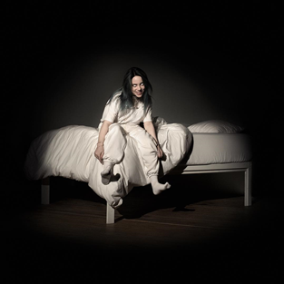

Happier Than Ever

When We All Fall Asleep, Where Do We Go?

Don't Smile at Me


Billie Eilish Pirate Baird O’Connell é uma jovem estrela pop que compõe e canta. A menina prodígio, com uma promissora carreira internacional, está cada vez mais famosa entre o grande público. A jovem começou a cantar aos oito anos de idade no Children’s Chorus. Aos 14 anos passou a lançar material original, escrito por ela e produzido e co-escrito pelo irmão Finneas O’Connell. A música que a divulgou para o mundo foi Ocean Eyes, lançada em 2016. Seu primeiro álbum lançado, When We All Fall Asleep, Where Do We Go?, em março de 2019, foi eleito um dos melhores discos do ano. Billie Eilish recebeu a encomenda de fazer um single para o novo filme do James Bond (007: Sem tempo para morrer). A jovem compôs, ao lado do irmão, a música No time to die, que ficou no topo das paradas de sucesso. Billie é até hoje a compositora mais jovem a ter sido escolhida para escrever uma canção tema da saga James Bond.